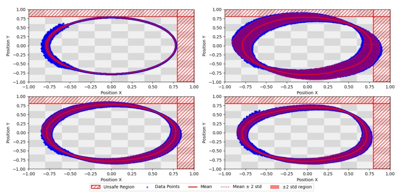

This paper forcibly equips imitation learning (IL) with a 'bulletproof vest' and 'brake pads'. The authors keenly point out that IL is not only susceptible to policy-induced shift but more vulnerable to safety hazards arising from uncertainty-induced shift. They forcibly combine Taylor series imitation learning (TaSIL) and L1-DRAC, incorporating safety constraints. Although it sounds very hardcore, the essence lies in adapting robust control techniques to imitation learning. Experiments conducted on UAVs appear quite stable, yet computational complexity may explode, as it requires calculating worst-case scenarios within the Wasserstein ball. In summary, while safety is achieved, what about efficiency? Will this 'bulletproof vest' be too heavy, rendering it unable to fly? Furthermore, safety constraints are based solely on one-step prediction, and multi-step safety guarantees require further verification.
Imitation learning performs excellently in complex decision-making tasks, but distribution shift is a fatal flaw [2]. Existing methods mainly address two types of issues: first, policy drift, such as DAgger [10] or TaSIL [14] alleviating it through data aggregation or higher-order derivative alignment; second, environmental uncertainty, such as DRIP [9] attempting hierarchical control. However, existing work often sacrifices one for the other: TaSIL ignores uncertainty, while DRIP, although hierarchical, does not explicitly optimize performance under distribution robustness and lacks safety constraints. In actual deployment, minor environmental disturbances may accumulate into disasters, even leading to collisions. Therefore, there is an urgent need for a unified framework capable of simultaneously addressing policy drift, environmental uncertainty, and explicitly guaranteeing safety, avoiding the awkwardness of 'learning well but unable to use'. Especially when expert data differs from the deployment environment, traditional BC or TaSIL are extremely prone to failure.
The overall framework is based on the synergy of TaSIL and L1-DRAC. First, TaSIL is utilized to align the policy and its higher-order derivatives, reducing policy drift. Second, the TaSIL objective function is reconstructed into a distributionally robust form, optimizing worst-case performance within the Wasserstein ball, rather than relying solely on expert trajectories. Specifically, the loss function is sampled in the neighborhood of expert trajectories, maximizing alignment error to ensure the policy remains close to the expert under uncertainty. Third, a safety term is introduced, using CVaR to approximate chance constraints; if safety regions are violated, a penalty is increased via the ReLU function to guide the policy to avoid forbidden zones. Finally, low-level control adopts L1-DRAC to compensate for uncertainty in the real system, ensuring the distribution distance between the nominal and actual systems is bounded. This design combines offline training with online robust control, achieving a closed loop from policy learning to safe execution. Parameter selection relies on experience, and the impact of computational overhead on real-time performance is not discussed.
Verified in a UAV case study, the task involves flying along a circular trajectory and avoiding forbidden zones in an uncertain environment. Four strategies were compared: Standard TaSIL (without/with uncertainty), TaSIL+L1-DRAC, and the proposed method. Results show that Standard TaSIL deviates in trajectory when uncertainty is present and cannot avoid forbidden zones. After adding L1-DRAC, the trajectory is more stable, but may still cross boundaries. Only the distributionally robust safety TaSIL of this paper can both follow expert trajectories and actively avoid unsafe areas under uncertainty. The experiments confirm the effectiveness of the framework, but parameter tuning relies on experience, and the impact of computational overhead on real-time performance is not discussed. Safety regions are defined as linear constraints, handled via CVaR approximation, which may be insufficiently precise under non-convex constraints.

Fig. 1. Monte Carlo simulations of the task under different controllers and operating conditions. (Top-Left) Standard TaSIL policy in the absence of uncertainties. (Top-Right) Standard TaSIL policy in the presence of uncertainties. (Bottom-Left) Standard TaSIL policy augmented with L1-DRAC in the presence of uncertainties. (Bottom-Right) Distributionally robust and safe TaSIL policy augmented with L1-DRAC in the presence of uncertainties.